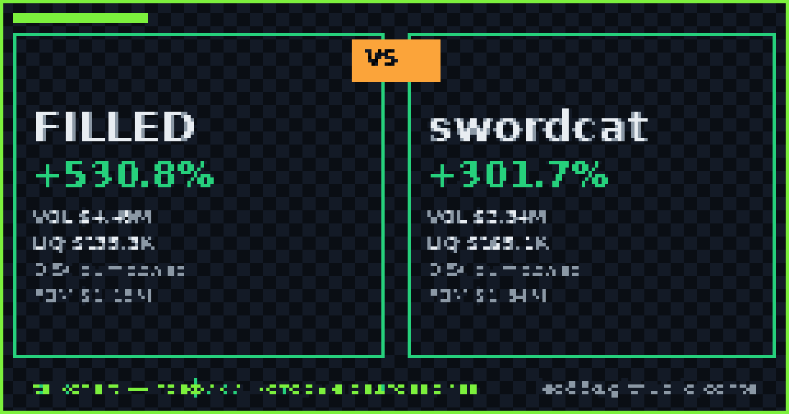

📈 TalkChart · каталог баттлов · [md для AI]
Срез данных: 2026-10-03 13:30 UTC · сеть Solana DEX

По ончейн-метрикам TalkChart: FILLED опережает по ценовому импульсу (+530.8% против +301.7%). Краткосрочный фаворит по совокупности факторов: FILLED.
| Параметр | FILLED | swordcat | Лидер |
|---|---|---|---|
| Суточный рост (24ч) | +530.8% | +301.7% | FILLED |
| Объём 24ч | $4.49M | $2.34M | FILLED |
| Глубина пула (TVL) | $135.3K | $165.1K | swordcat |
| Отношение Объём / TVL | 33.2× | 14.2× | — |
| DEX биржа | pumpswap | pumpswap | — |
| Адрес пула | A8JMWc6i… | 8ewuF2o8… | — |
По ончейн-метрикам TalkChart: FILLED опережает по ценовому импульсу (+530.8% против +301.7%). Краткосрочный фаворит по совокупности факторов: FILLED.
У FILLED суточный объём $4.49M при ликвидности $135.3K. У swordcat объём $2.34M при ликвидности $165.1K.
FILLED показал +530.8% за сутки, в то время как swordcat изменился на +301.7%.
Сгенерировано фабрикой контента TalkChart. Обновляется каждые 4 часа. Не является финансовой рекомендацией.